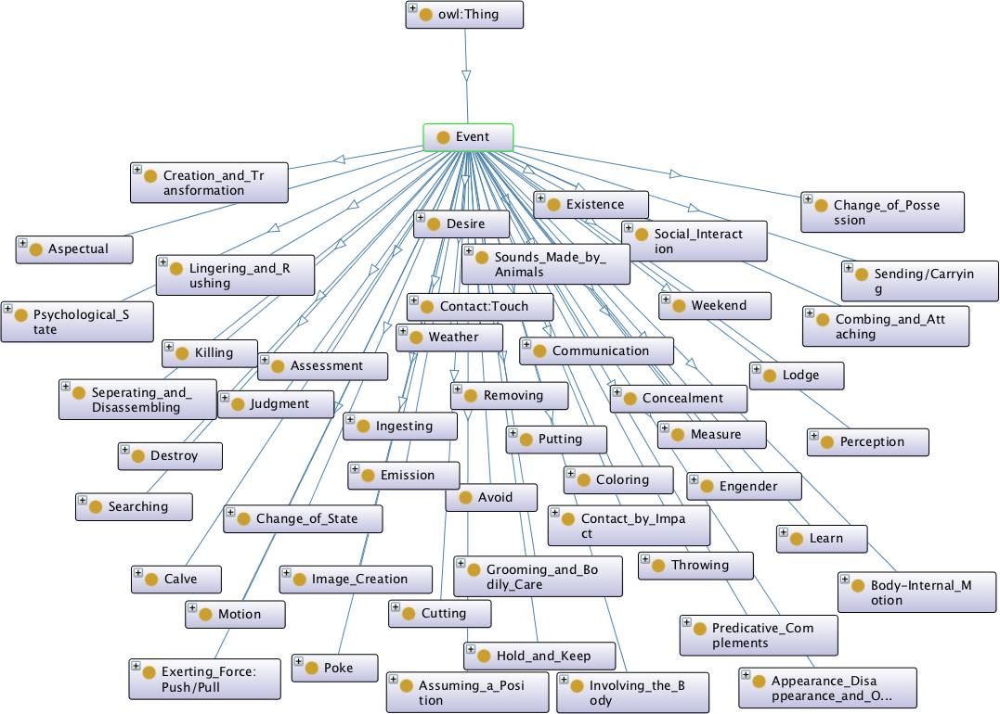
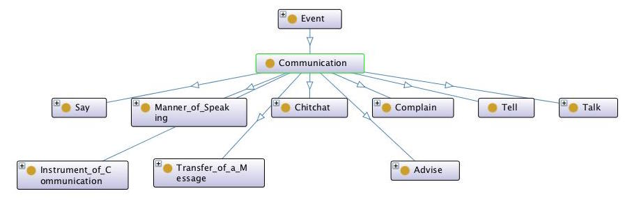
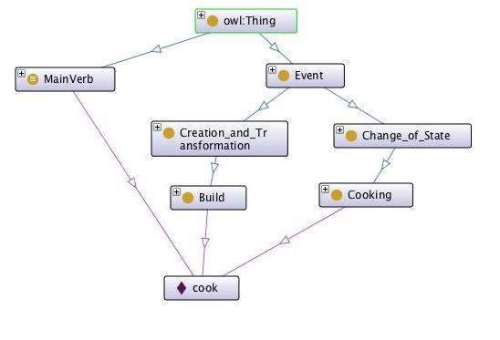
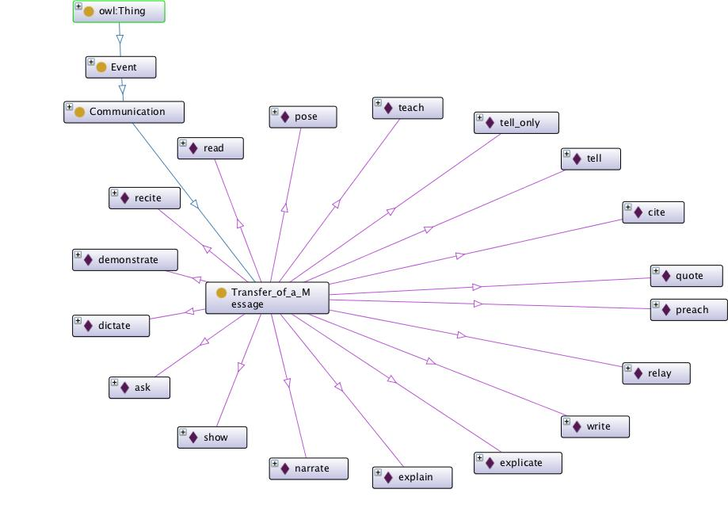
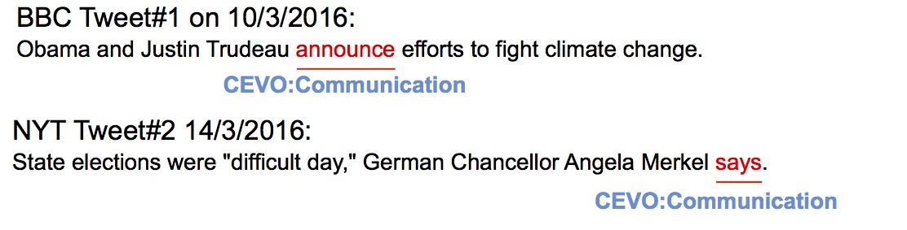

- This version:
- http://eventontology.org/1.0
- Latest version:
- http://eventontology.org/1.0
- Authors:
- Saeedeh Shekarpour

|
|
 This work is licensed under a Creative Commons
Attribution 4.0 International (CC By 4.0). This copyright applies to the CEVO Specification and Ontology
and accompanying documentation in RDF.
This work is licensed under a Creative Commons
Attribution 4.0 International (CC By 4.0). This copyright applies to the CEVO Specification and Ontology
and accompanying documentation in RDF.
While the general analysis of named entities has received substantial research attention, the analysis of relations over named entities has not. In fact, a review of the literature on unstructured as well as structured data revealed a deficiency in research on the abstract conceptualization required to organize relations. We believe that such an abstract conceptualization can benefit various communities and applications such as natural language processing, information extraction, machine learning and ontology engineering. Thus, herein we present CEVO (i.e., a comprehensive event ontology) built on Levin's conceptual hierarchy of English verbs that categorizes verbs with the shared meaning and syntactic behavior. We present the fundamental concepts and requirements for this ontology.
There is an organized lexicon and knowledge base assembled by the Stanford linguist Beth Levin in [1]. While Levin relies on Schank's conceptual dependency theory [2] to organize this knowledge base, the key here is the psychologically principled inventory of English verbs aligned with the knowledge base. Classes in this knowledge base identify sets of semantically coherent verbs with corresponding syntactic properties. The entries of Levin's lexical knowledge base are verb classes whose members are English verbs having two characteristics: (i) semantically coherent and (ii) shared syntactic behavior.
In the following, we present the main concepts introduced in the schema of CEVO, and individual verbs associated with events.
The core class of CEVO is the class of Generic Event that is the superclass of all specific events. This generic Event class refers to `occurrence of anything'. It generally is the superclass of any specific type of event. The Generic Event class is formally defined as follows:
cevo:Event a owl:Class. cevo:Event rdfs:label 'event'. cevo:Event rdfs:comments 'something that happens'.
The Levin conceptual hierarchy is incorporated under the Generic Event class. In other words, any class provided for a set of English verbs revealing a specific event which is considered as an owl:Class. Formally as: Class of `X' Event: `X' Event is a subclass of the class generic Event. Below the first level of Levin hierarchy is represented. All events of this level are a subclass of the class of generic event.
Conceptually, each specific event that is associated with an English verb category sharing a common behavior or meaning. For instance, the class communication given below is defined as a subclass of Generic Event. This class refers to occurrence of any activity for communicating or transferring message/idea.
The next main class is cevo:MainVerb that refers to words with part of speech as verb. This class is equivalent to the class of main verb of OLiA [4] ontology. OLiA [5] is an annotation model based on morphology.
cevo:MainVerb a owl:Class. cevo:MainVerb owl:equivalentClass OLiA:MainVerb.
So far, we described the schema level classes; the next important step is to map each individual English verb to the corresponding event class. Thus, we instantiate each English verb at the instance level and type this verb first as cevo:MainVerb and secondly map it to the associated event. In the following, the English verbs cook is presented (i.e., with the type cevo:MainVerb). The apperance of this verb reveals possibility of occurence of two types of events. The first event is event of cooking which belongs to the abstract class of Change of State and the second event is build which belongs to the class of Creation and Transformation. This hierachy of events for the verb cook is represented below.
In fact, each specific event is associated to all English verbs which may cause occurence of that event. For example, English verbs such as demonstrate, tell, explain, read etc may cause the event of Transfer of a Message. In the following, the full list of verbs associated to the class Transfer of a Message is represented.
In the following, we present three use cases which show benefits of CEVO ontology for annotation.
CEVO can promote annotating relations in plain text. Figure 2 shows two head- line news on Twitter. The first tweet was published by BBC and the second one was published by New York Times. Tweet#1 is headed by the verb announce and the tweet#2 is headed by the verb say. Both of these tweets are similar in the sense that a message is transferred. Annotating these two tweets via CEVO enables us to obtain the same tag communication for both of these verbs, whereas the two verbs announce and say do no hold lexical relations such as synonymy.

CEVO can be utilized for annotating properties of any ontology. One way of providing such an annotation is using the Web Annotation Data Model (WADM, W3C Working Draft 15 October 2015, [4]) which is a framework for expressing annotations. A WADM annotation has two elements (i) a target which indicates the resource being annotated and (ii) the body which indicates the description. Annotating properties of various ontologies according to CEVO addresses integration and alignment problems. Assume that we have the property
example:annotation1 a oa:Annotation. example:annotation1 oa:hasTarget http://dbpedia.org/ontology/spouse. example:annotation1 oa:hasBody CEVO:Amalgamate.
CEVO can be utilized for annotating properties of any ontology. One way of providing such an annotation is using the Web Annotation Data Model (WADM, W3C Working Draft 15 October 2015, [4]) which is a framework for expressing annotations. A WADM annotation has two elements (i) a target which indicates the resource being annotated and (ii) the body which indicates the description. Annotating properties of various ontologies according to CEVO addresses integration and alignment problems. Assume that we have the property
example:annotation2 a oa:Annotation. example:annotation2 oa:hasTarget example:headline1#marry. example:annotation2 oa:hasBody CEVO:Amalgamate.
The namespace for CEVO is
http://eventontology.org/. CEVO uses
terms from other vocabularies. A full list of namespaces
and prefixes used in CEVO is represented in the following table.
| Prefix | Namespace | Reference |
|---|---|---|
| rdf | http://www.w3.org/1999/02/22-rdf-syntax-ns# | [RDF-CONCEPTS] |
| rdfs | http://www.w3.org/2000/01/rdf-schema# | [RDF-SCHEMA] |
| dcterms | http://purl.org/dc/terms/ | [DC11] |
| dctype | http://purl.org/dc/dcmitype/ | [DCTYPE] |
We acknowledge partial support from the National Science Foundation (NSF) award: EAR 1520870: Hazards SEES: Social and Physical Sensing Enabled Decision Support for Disaster Management and Response. Any opinions, findings, and conclusions/recommendations expressed in this material are those of the author(s) and do not necessarily reflect the views of the NSF.